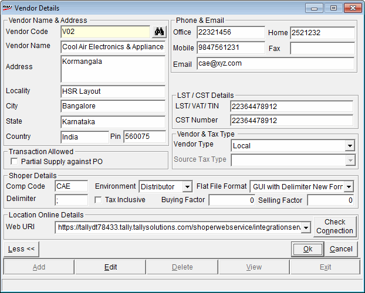

The Vendor Catalogue window is as shown.

Vendor Code: Enter the vendor code.
Vendor Name: Enter the vendor name.
Vendor Address: Enter the vendor address.
Phone & Email: Enter phone, Fax and Email details.
LST/CST Details:
Vendor LST/TIN: Enter vendor's LST number or TIN.
Vendor CST: Enter vendor's CST number.
Vendor Type: Select a type from the list. This list is populated with those types catalogued in General lookup.
Note: If source tax is enabled using the system parameter Source-wise Tax Grouping Applicable under the category Tax, a field named Source Tax Type appears below Vendor CST. Select the source-wise sales tax group from the list. The values in this list are from those catalogued in General Lookup.
Partial Supply against Purchase Orders Allowed: Select to allow partial supply of goods against the purchase orders placed on this vendor.
Shoper Details: Enter details of Shoper used by the vendor, if the new vendor is a Shoper user. These details help in data transfer.
Company Code: Enter the Shoper company code.
Environment: Select Retail or Distributor depending on the environment in which the vendor operates.
Flat File Format: Select the appropriate format in which the flat file has to be created.
Delimiter: Semicolon is the default delimiter used in creation of data files. You can change the delimiter, if required. This field will be disabled if the Flat File Format selected is either DOS Format or GUI Format.
Tax Inclusive: Select to treat the cost price of items as inclusive of tax.
Buying Factor/ Selling Factor: Enter the factors (for example, 10) to be applied as a rate or amount on retail/ dealer prices while creating flat files for different types of transactions.
Note: The factor set here is used in the option Setup > General Setup > Flat File Value.
Location Online Details
Web URL: Enter the web service URL details of the catalogued Chain Store.
Check Connection: Click to test the connectivity with the Chain Store.